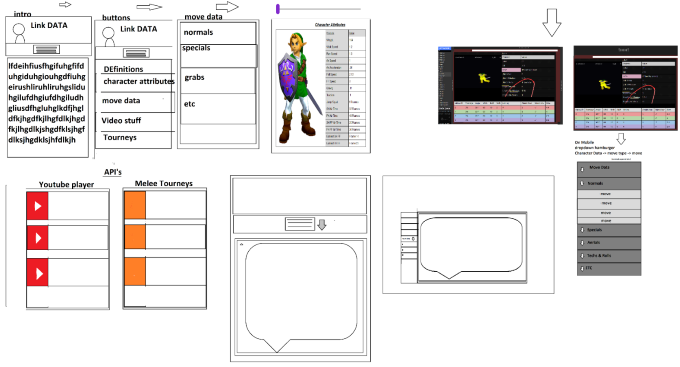

Hyperlink is a character database for competitive Super Smash Brothers Melee Link players.
It will use API's to find relevant tournament info, as well as video resources.
Additionally, it will contain a menu consisting of all of Link's moves and attributes.
Each move will have a corresponding interactive GIF, as well as a table to display the move's data.
As a competitive Link player,
I want a data resource containing all of the relevant info to the character I play,
as well as the ability to keep up with tournaments, I would also like to have readily
available video resources for study,
So that I am able to quickly find the information I need regarding my character.

HTML and CSS framework
Javascript / jQuery
https://cr31293.github.io/HyperLink/